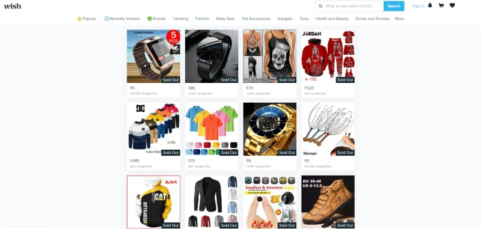

What can AvianBPO do?
AvianBPO have been successful in assisting customer services for E-commerce and other business industries since customer expectations are evolving rapidly.
E-Commerce Industries
In the last two decades, widespread use of e-commerce platforms has contributed to substantial growth in online retail. The business transactions occur here likely as business-to-business (B2B), business-to-consumer (B2C), consumer-to-consumer or consumer-to-business over the internet.
AvianBPO’s contribution
Ecommerce industries are a great source of earning now-a-days. But succeeding here is not easy. You open an online shop, upload some random product and there will not be a good amount of sale. To do better in these markets, you need some strategies We, AvianBPO, are here to give you some special support so that people buys more from you.
Marketplace Research
If you have an Online store, you probably already know how hard it is to get more people to shop there. One of the best ways to keep going is to advertise your products in big online markets. We did a simple research to help you find a suitable marketplace for you.
Amazon
Why you should Sell on Amazon
From a seller’s viewpoint, Amazon is the best way to reach customers all over the world. You can expect a lot of sales even on the Standard listings. Amazon’s Affiliate program provides a marketing advantage. Bloggers, eCommerce sites, and ad firms promote Amazon products as affiliates.
Following is a traffic report of Amazon for the last 3 months.
Source https://www.similarweb.com/website/target.com/#traffic
Ebay
Why you should Sell on eBay
eBay is a C2C and B2C online marketplace. Here people can buy and sell things online. Like Amazon, most people who intend to sell internationally also look at eBay. On eBay, you can list items for auction with a minimum price so that buyers can bid and you can make as much money as possible from your items.
Following is a traffic report of eBay for the last 3 months.
Source https://www.similarweb.com/website/target.com/#traffic
Walmart
Why you should Sell on Walmart
Walmart makes product selection and delivery easy and free 2-day shipping boosts conversion. Since Walmart has a store in practically every neighborhood, almost everyone knows and trusts them. They take steps to assure high-quality products in their marketplace.
Following is a traffic report of Walmart for the last 3 months.
Source https://www.similarweb.com/website/target.com/#traffic
Target Plus
Why you should Sell on Target
Target focuses on trend-based product promotion. People handle changes so shoppers constantly acquire things appropriate to a recent trend, season, occasion, or place. Target Plus’s local buyers are another perk. Certain buyers are so delighted with their delivery that they always look there before other online businesses.
Following is a traffic report of Target for the last 3 months.
Source https://www.similarweb.com/website/target.com/#traffic
Wayfair
Why you should Sell on Wayfair
WayFair is one of the best places to buy or sell household goods because it has relevant buyers and low-cost ways to promote your business. Their in-depth analytics give you good information about what customers want, which could help you decide whether to restock or stock new products. Also, if you are a store owner and your products sell well, they may offer to buy your products and sell themselves as a supplier.
Following is a traffic report of Wayfair for the last 3 months.
Source https://www.similarweb.com/website/target.com/#traffic
Overstock
Why you should Sell on Overstock
Overstock is trusted by buyers for inexpensive home decor. The company takes user experience seriously and removes bad products, including banning sellers for deceptive promotion. It has many home decor-only customers. If you’re in that industry, this site is better than Amazon or eBay.
Following is a traffic report of Overstock for the last 3 months.
Source https://www.similarweb.com/website/target.com/#traffic
Wish
Why you should Sell on Wish
Wish is so successful because the app suggests things that are likely to sell together to buyers. Unlike other markets, product suggestions are frequently accurate. Wish is one of the few online marketplaces with repeat customers. Wish store owners love repeat customers.
Following is a traffic report of Wish for the last 3 months.
Source https://www.similarweb.com/website/target.com/#traffic
Bonanza
Why you should Sell on Bonanza
Bonanza is called an alternative to eBay because there are more chances of selling. Bonanza has 1300 buyers against one seller, while eBay only has 10 buyers. One of the main reasons for this higher ratio is that Bonanza only allows sellers who live and work in the United States. Bonanza wants to make sure that both buyers and sellers are happy, so it is strict about only listing items from local suppliers and only selling to local buyers.
Following is a traffic report of Bonanza for the last 3 months.
Source https://www.similarweb.com/website/target.com/#traffic